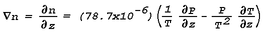

Dans le vide ou dans un medium de densité constante, l'énergie d'une source émettant de la lumière voyage selon une ligne droite. En conséquence, un observateur distant voit la source lumière à sa position exacte. Dans un medium de densité variable, comme l'atmosphère terrestre, la direction de la propagation d'énergie est déviée de la ligne droite ; i.e., réfractée. La refraction amène l'observateur à voir une source de lumière distante à une position apparente diffèrant de la véritable position par une distance angulaire dont la magnitude dépend du degré de refraction, i.e. du degré de variation de densité entre l'observateur et la source de lumière. Les changements de direction dans la propagation d'énergie proviennent principalement de changements dans la vitesse de propagation de l'énergie. Cette dernière est directement liée à la densité.
Une image claire de ce qui provoque la réfraction est obtenue par le biais du principe de Huygens qui indique que chaque point sur une wavefront Mai be regarded as the source or center of "secondary waves" or "secondary disturbances," At a given instant, the wavefront is the envelope of the centers of the secondary disturbances. In the case of a travelling wavefront the center of each secondary disturbance propagates in a direction perpendicular to the wavefront. When the velocity of propagation varies along the wavefront the disturbances travel different distances so that the orientation of their enveloping surface changes in time, i.e., the direction of propagation of the wavefront changes.
Practically all large-scale effects of atmospheric refraction can be explained by the use of geometrical optics, which is the method of tracing light rays -- i.e., of following directions of energy flow. The laws that form the basis of geometrical optics are the law of reflection (formulated by Fresnel) and the law of refraction (formulated by Snell). When a ray of light strikes a sharp boundary that separates two transparent media in which the velocity of light is appreciably different, such as a glass plate or a water surface, the light ray is in general divided into a reflected and a refracted part. Such surfaces of dis- continuity in light velocity do not exist in the cloud-free atmosphere. Instead changes in the speed of energy propagation are continuous and are large only over layers that are thick compared to the optical wavelengths. It has been shown (J. Wallot, 1919) that, in this case, the reflected part of the incident radiation is negligible so that all the energy is contained in the refracted part. Since in the lower atmosphere, where mirages are most common, absorption of optical radiation in a layer of the thickness of one wavelength is negligible, Snell's law of refraction forms the basis of practically all investigations of large-scale optical phenomena that are due to atmospheric refraction (Paul S. Epstein, 1930).
L'indice de réfraction optique (n) est défini comme le ratio de la vitesse (v) à laquelle la lumière monochromatique (à longueur d'onde unique) est propagée dans un medium homogène, isotrope, non-conducteur, à la vitesse (c) de la lumière dans l'espace libre, i.e., n = c/v. Dans l'espace libre, i.e., hors de l'atmosphere terrestre, n = 1. Ainsi, dans le cas d'un signal lumineux monochromatique voyageant à travers un medium donné, c/v > 1. Dans le cas où le signal lumineux n'est pas monochromatique et que les vitesses (v) des ondes composites varient avec la longueur d'onde (Lambda), l'énergie du signal est propagée avec une vitesse de groupe u où :
u = v - λ(dv/dλ)
L'indice de réfraction de groupe est donné par :
c/u = n - λ(dn/dλ)
Jenkins et White, 1957. Dans la région visible du spectre électromagnétique la dispersion, dn/d·Lambda est très petite (voir tableau 1) et un indice de groupe est pratiquement égal à l'indice de la longueur d'onde moyenne.
Pour un gaz, l'indice de réfraction est proportionnel à la densité rho du gaz. Ceci peut être exprimé par la relation de Gladstone-Dale :
| Conditions: 5455 Å, 15°C | |
| P, mb | n |
|---|---|
| 1,000 | 1.000274 |
| 950 | 1.000260 |
| 900 | 1.000246 |
| Conditions: 5455 Å, 1013.3 mb | |
| T, °C | n |
|---|---|
| 0 | 1.000292 |
| 15 | 1.000277 |
| 30 | 1.000263 |
| Conditions: 1013.3 mb, 15°C | |
| Lambda, Å | n |
|---|---|
| 4,000 | 1.000282 |
| 5,000 | 1.000278 |
| 6,000 | 1.000276 |
| 7,000 | 1.000275 |
| 8,000 | 1.000275 |
where k is a wavelength-dependent constant, P and T are the pressure and temperature, and R is the gas constant. The refractive index of a mixture of gases, such as the earth's atmosphere, is generally assumed to obey the additive rule, that is, the total value of n-1 is equal to the sum of the contributions from the constituent gases weighted by their partial pressures. When the atmosphere is considered as a mixture of dry air and water vapor,
(n - 1)P = (P - e)(nd - 1) + e(nv - 1)
ou
where P denotes the total pressure of the mixture, e the partial water vapor pressure and the subscripts d and v refer to dry air and water vapor, respectively. Using Eq. (1), the refractive index n of the moist air at any temperature T and pressure P can be written
where nd and nv are the refractive indices at Po and To. For Lambda = 5455Å (about the center of the visible spectrum), at Po = 1013.3 mb (760 mm Hg) and To = 273°K, nd = 1.000292 and nv = 1.000257, so that
For P = 1013.3 mb, maximum values of e/P (air saturated with water vapor) for a range of tropospheric temperatures are as follows:
| T(°K) | 273 | 283 | 288 | 293 | 298 | 303 |
| e/P | 0.006 | 0.012 | 0.017 | 0.023 | 0.031 | 0.042 |
It is evident that in problems related to terrestrial light refraction the effects of humidity on the atmospheric refractive index are negligible. It is of interest to compare the formula for the optical refractive index with that for radio waves in the centimeter range. The latter can be written
The formula for the optical refractive index can be written
where Rd = gas constant for dry air. By introducing k as a function of wavelength (Johnson, 1954), a final expression for the optical refractive-index in the atmosphere can be written as
where the Sigmao2 are resonance lines and Sigma is the wavenumber in inverse microns (i.e. 1/Lambda). The latest equation is (Edlén, 1966):
where na is the refractive index of dry air containing 0.03% CO2'. Pa is the partial pressure of dry air, and Za-1 is the inverse compressibility factor for dry air (Owens, 1967). Za-1 is very close to unity; for :
Pa = 1013,25 mb,
T = 288,16 °K (15 °C)
Za-1 - 1 = 4,15 x 10-4
The standard value of Za-1 is assumed, i.e., the constant is
77,497 x 1,000415 ~ 77,53.
Table 1 gives the range of n for various ranges of atmospheric pressure, temperature, and wavelength. The listed values are of sufficient accuracy for a discussion of optical mirage. For a more recent version of Eq. (2) and differences in n smaller than 10-6 reference is made to the detailed work by Owens (1967).
Table 1 shows that the optical refractive index of the atmosphere is a relatively small quantity and that its largest variations with temperature, pressure and wavelength are of the order of 10-5. Such small changes in the refractive index correspond to relatively small changes in the direction of optical-energy propagation. Hence, an optical image that arises from atmospheric light refraction cannot be expected to have a large angular displacement from the light source.
La loi de Snell, formulée pour la réfraction at a boundary, Mai be stated as follows: the refracted ray lies in the plane of incidence, and the ratio of the sine of the angle of incidence to the sine of the angle of refraction is constant. The constant is equal to the ratio of the indices of refraction of the two media separated by the boundary. Thus, Snell's law of refraction requires that:
where phi and phi' are the angles of incidence and refraction respectively in the first and second medium, while n and n' are the corresponding values of the refractive index (see Fig. 1).
The angle of refraction (phi') is always larger than the angle of incidence (phi) when n > n', and the direction of energy propagation is from dense-to-rare. The critical angle of incidence (phic) beyond which no refracted light is possible can be found from Snell's law by substituting phi' = 90°. Thus,
For all angles of incidence > phic the incident energy is totally reflected, and the angle of reflection equals the angle of incidence (Goos and Haenchen, 1947).
Mirages arise under atmospheric conditions that involve "total reflection." Under such conditions the direction of energy propagation is from dense-to-rare, and the angle of incidence exceeds the critical angle such that the energy is not transmitted through the refracting layer but is "mirrored." The concept of total reflection is most rigorously applied by Wegener in his theoretical model of atmospheric refraction (Wegener, 1918).
Snell's law can be put into a form that enables the construction of a light ray in a horizontal layer wherein the refractive index changes continuously. Introducing a nondimensional rectangular phi ,z coordinate system with the x-axis in the horizontal,
where Phi denotes the angle between the vertical axis and the direction of energy propagation in the plane of the coordinate system. Snell's law can now be applied by writing
et
where no and phio are initial values. Substitution gives
When the refractive index n is expressed as a continuous function of x and z, the solution to the
differential equation (3) gives a curve in the x,z plane that represents the light ray emanating to the point
(no, phio).
For example, when
n2 = n02 - z
Eq. (3) can be integrated in the form :
For an initial refractive index no and an initial direction of energy flow Thetaointegration between 0 and z gives:
This equation represents a parabola. Hence, for a medium in which n changes with z in the above prescribed fashion, the rays emanating from a given light source are a family of parabolas.
When the ordinate of the nondimensional coordinate system is to represent height, z must represent a quantity az', where z' has units of height and a is the scale factor.
By introducing more complicated refractive-index profiles into Eq. (3), the paths of the refracted rays from an extended light source can be obtained and mirage images can be constructed. Tait and other investigators have successfully used this method to explain various mirage observations.
Application of Eq. (3) is restricted to light refraction in a plane- stratified atmosphere and to refractive-index profiles that permit its integration.
The theory of ray tracing or geometrical optics does not indicate the existence of partial reflections, which occur wherever there is an abrupt change in the direction of propagation of a wavefront. An approximate solution to the wave equation Mai be obtained for the reflection coefficient applicable to a thin atmospheric layer (Wait, 1962):
where R is the power reflection coefficient, Phi the angle of incidence, Z is height through a layer bounded by Z1 and Z2, and Ko is the vacuum wavenumber
The equation is generally valid only when the value of R is quite small, say
This result can be applied to atmospheric layers of known thickness and refractive index distribution; the most convenient model is that in which :
dn/dz = const. pour z1 ≤ z ≤ z2 et dn/dz = 0
everywhere else. Although some authors have argued that the reflection coefficient using this model depends critically
upon the discontinuity in du/dz at the layer boundaries, it can be shown using continuous analytic models that
the results will be the same for any functional dependence so long as the transition from
où :
α = K0 cos Φ h
Delta·n is the total change in n through the layer, and h is the thickness of the layer,
h = z2 - z1
For large values of h/Lambda, and hence large values of Alpha, the term sin (Alpha)/Alpha Mai be approximated as 1/Alpha for maxima of sin Alpha. Since h/Lambda is always large for optical wavelengths, e.g.
for a layer 1 cm thick, the power reflection coefficient Mai be approximated by
Atmospheric layers with :
Δn ≅ 3,0x10-6
and h = 1 cm are known to exist in the surface boundary layer, e.g. producing inferior mirage. For visible light with a "center wavelength" of 5.6xl0-5 cm (0.56µ), Lambdao/h is thus 5.6x10-5. R then becomes :
R ≅ 1,6x10-20 sec6 Φ
This is a very small reflection coefficient, and light from even the brightest sources reflected at normal incidence by such a layer would be invisible to the human eye. The situation Mai be different at grazing incidence or large Phi; for a grazing angle of 1°, Phi = 89°,
sec6 Φ ≅ 3,54x1010
et
R ≅ 5,6x10-10, Φ = 89 °
The critical grazing angle, Thetac, for a total reflection for the thin layer under discussion is given by
which yields a value of 0.007746 rad or 26.6'. Substituting
R ≅ 7,4x10-8, Φ = 89 ° 33,4'
Since the human eye is capable of recording differences at least as great as 3.5x10-8 (Minnaert, 1954), partial reflections of strong light sources Mai occasionally be visible. The theoretical treatment discussed here shows that as the critical angle for a mirage is exceeded there should be a drop in reflected intensity on the order of 10-7 - 10-8, so that instead of a smooth transition from totally to partially reflecting regimes, there should be a sharp decrease giving the impression of a complete disappearance of the reflection. This is in agreement with observation. The theory also indicates that faint images produced by partial reflection of very bright light sources, e.g. arc lights, Mai be seen at angles somewhat larger than the critical angle for a true mirage.
As dictated by Snell's law, refraction of light in the earth's atmosphere arises from spatial variations in the optical refractive index. Since :
n = f(P, T, λ)
according to Eq. (2), the spatial variations of n(Lambda) can be expressed in terms of the spatial variations of atmospheric pressure and temperature. Routine measurements of the latter two quantities are made by a network of meteorological surface observations and upper-air soundings. When the optical wavelength dependence of n is neglected, Eq. (2) takes the form
and the gradient of n is given by
Optical mirages are most likely to form when atmospheric conditions of relative calm (no heavy cloudiness, no precipitation or strong winds) and extended horizontal visibility (<10 miles) are combined with large radiative heating or cooling of the earth's surface. Under these conditions the vertical gradients of pressure and temperature are much larger than the horizontal gradients, i.e., the atmosphere tends to be horizontally stratified [When horizontal gradients in the refractive index are present, the complex mirage images that occur are often referred to as Fata Morgana. It is believed, however, that the vertical gradient is the determining factor in the formation of most images]. Thus,

or
Thus, the spatial variation in the refractive index, i.e., light refraction, depends primarily on the vertical temperature gradient. When ðn/ðz is negative and the direction of energy propagation is from dense to rare, the curvature of light rays in the earth's atmosphere is in the same sense as that of the earth's surface. Equation (4) shows that ðn/ðz is negative for all vertical gradients of temperature except those for which the temperature decreases with height > 3.4°C/l00 m. No light refraction takes place when ðn/ðz = 0; in this case ðn/ðz = -3.4°C/100 m. which is the autoconvective lapse rate, i.e., the vertical temperature gradient in an atmosphere of constant density. Table 2 gives the curvature of a light ray in seconds of arc per kilometer for various values of ðn/ðz near the surface of the earth (standard P and T). When ray curvature is positive, it is in the same sense as an earth's curvature.
|
(°C/100m) |
Courbure des rayons lumineux ("/km) |
|---|---|
| -3,4 | 0 |
| -1,0 | 5,3 |
| -0,5 | 6,4 |
| 0 | 7,5 |
| +6,9 | 22,7 |
| +11,6 | 33,0 |
From Table 2 it is evident that two types of vertical temperature variation contribute most to the formation of mirages; these are temperature inversions [( ðT/ðZ )>0] and temperature lapse rates exceeding 3.4°C/100m (the autoconvective lapse rate). Superautoconvective lapse rates cause light rays to have negative curvature (concave upward), and are responsible for the formation of inferior mirages (e.g., road mirage). The curvature of the earth's surface is 33"/km, and thus whenever there is a sufficiently strong temperature inversion, light rays propagating at low angles will follow the curvature of the earth beyond the normal horizon. This is the mechanism responsible for the formation of prominent superior mirages.
The strength and frequency of vertical temperature gradients in the earth's atmosphere are constantly monitored by meteorologists. The largest temperature changes with height are found in the first 1000 m above the earth's surface. In this layer, maximum temperature gradients usually arise from the combined effects of differential air motion and radiative heating or cooling.
The temperature increase through a low-level inversion layer can vary from a few degrees to as much as 30°C during nighttime cooling of the ground layer. During daytime heating, the temperature can drop by as much as 20°C in the first couple of meters above the ground (Handbook of Geophysics and Space Environments, 1965). Large temperature lapses are generally restricted to narrow layers above those ground surfaces that rapidly absorb but poorly conduct solar radiation. Temperature inversions that are due to radiative cooling are not as selective as to the nature of the lower boundary and are therefore more common and more extensive than large lapses. Temperature inversions can extend over horizontal distances of more than 100 km. Large temperature lapses, however, do not usually extend uninterrupted over distances more than a couple of kilometers.
At any given location, the frequency of occurrence of large temperature lapses is directly related to the frequency
of occurrence of warm sunny days. Fig.2 shows the average distribution of normal summer sunshine across the
United States (Visher, 1954). More than seventy percent of the possible total is recorded in a large area extending
from the Mississippi to the West Coast. Consequently, low-level mirages associated with large temperature lapses Mai
be rather normal phenomena in this area. Distribution for summer and winter of the frequency of occurrence of
temperature inversions < 150 m above ground level are shown for the United States in Fig. 3 (Hosler, 1961).
The data are based on a two-year sampling period. Figure 4 shows the distribution across the United States of the
percentage of time that the visibility exceeds 10 km (Eldridge, 1966). When Figs. 3 and 4 are combined it is seen that
large areas between roughly the Mississippi and the West Coast have a high frequency of extended horizontal visibility
and a relatively high frequency of low-level temperature inversions. These meteorological conditions are favorable for
the formation of mirages. On the basis of the climatic data shown in Figs. 2, 3, and 4 it can be concluded that at
some places a low-level mirage Mai be a rather normal phenomenon while in other places it Mai be highly abnormal. An
example of the sometimes daily recurrence of superior mirage over the northern part of the Gulf of California is
discussed by Ronald Ives (1968).
Temperature inversions in the cloud-free atmosphere are often recorded at heights up to 6,000 m above the ground. These elevated inversions usually arise from descending air motions, although radiative processes can be involved when very thin cirrus clouds or haze layers are present. Narrow layers of high-level temperature inversion, e.g., 4°C measured in a vertical distance of a few meters, extending without appreciable changes in height for several tens of kilometers in the horizontal direction have been encountered (Lane, 1965). Such inversions are conducive to mirage formation when they are accompanied by extended visibility in the horizontal as well as in the vertical. A climatology of such inversions can be obtained from existing meteorological data.